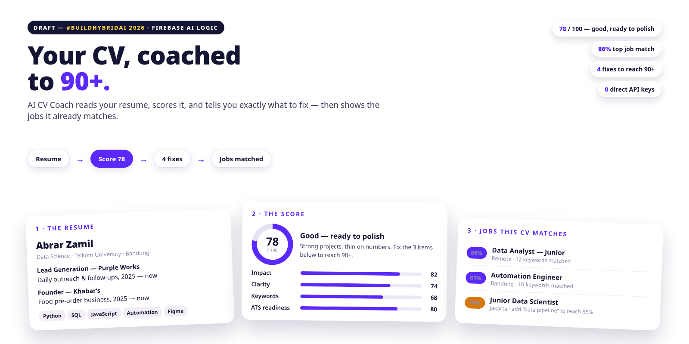
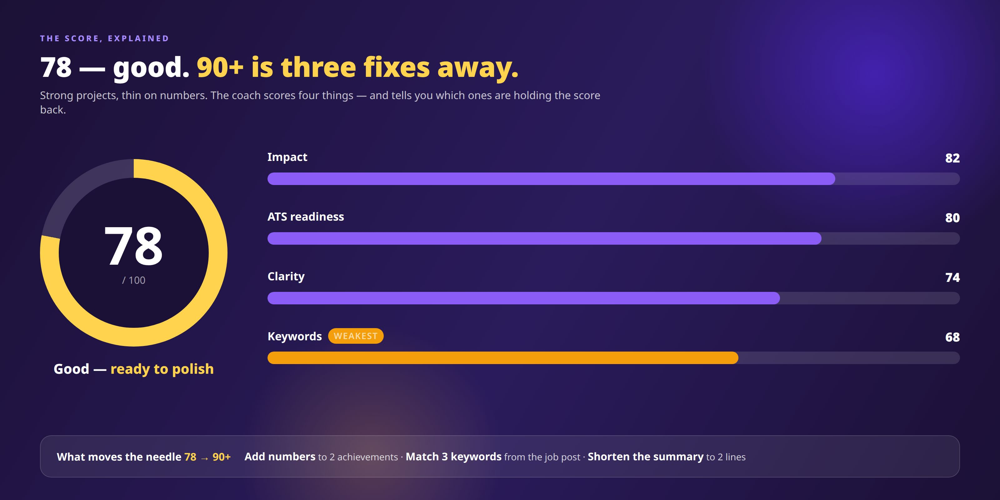
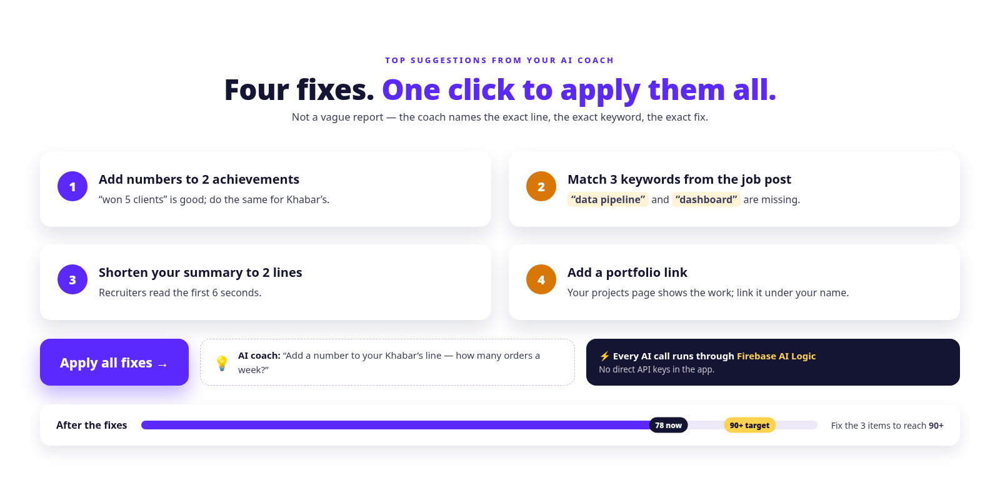
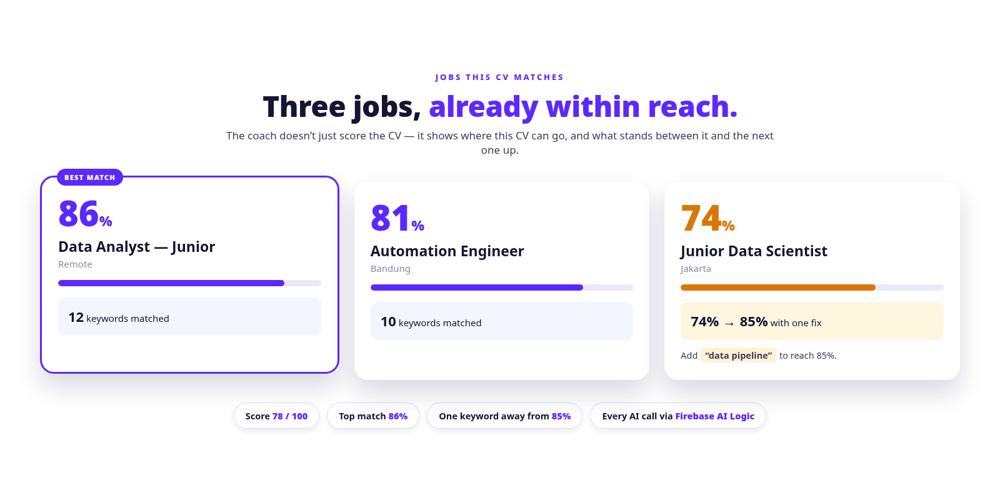
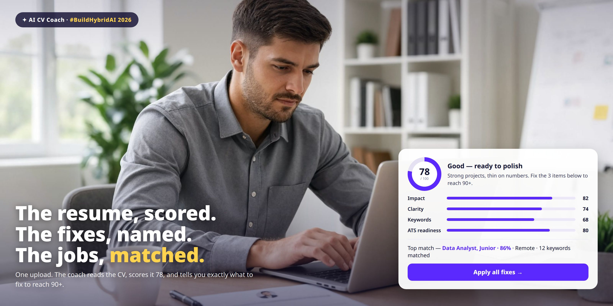
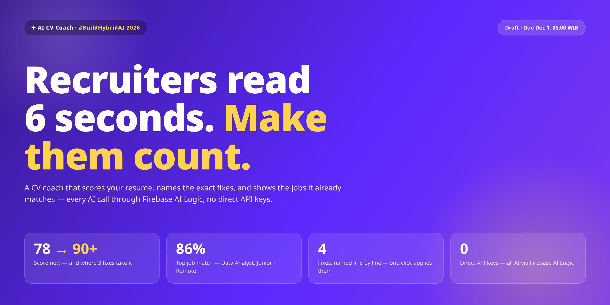
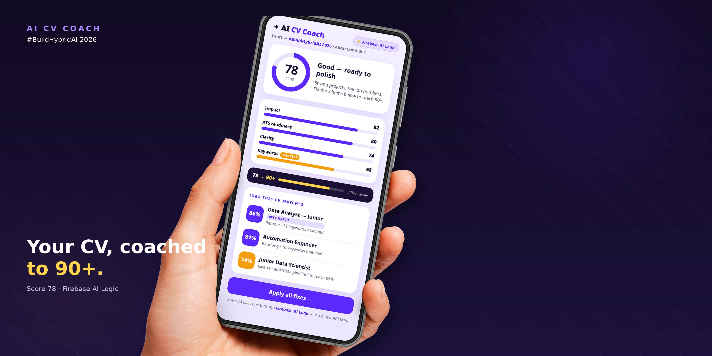

AI CV Coach
A CV coach that reads your resume, scores it, and tells you exactly what to fix — then shows the jobs it already matches.
Who this is for: job seekers who send the same CV to every job and never hear back.

Recruiters read 6 seconds. Make them count.
A CV goes out, and nothing comes back. Nobody says why — was it the missing keywords, the long summary, the achievements with no numbers? Without an answer, the next application sends the same CV again.
Three steps
Upload the CV
The coach reads the resume: roles, achievements, skills and the summary.
Get the score
Four scores — Impact, ATS readiness, Clarity, Keywords — add up to 78 out of 100, with the weakest one flagged.
Fix and match
Four fixes, named line by line, one click to apply — then the jobs this CV already matches.
Built to be relied on
All AI through Firebase AI Logic
Every AI call runs through Firebase AI Logic. No direct API keys in the app.
It names the exact fix
Not a vague report — the coach names the exact line, the exact keyword, the exact fix.
A score you can act on
Four scores with the weakest one flagged, so you know what to fix first.
78 now. 90+ is three fixes away.
Scored on my own CV. A draft in progress for #BuildHybridAI 2026, due Dec 1, 05:00 WIB.
Screens
Strong projects, thin on numbers. Fix the 3 items below to reach 90+.
The project in seven photos







More projects
Other things I’ve built — scroll through the rest.


Want something like this?
Tell me about your project. I reply within one working day.